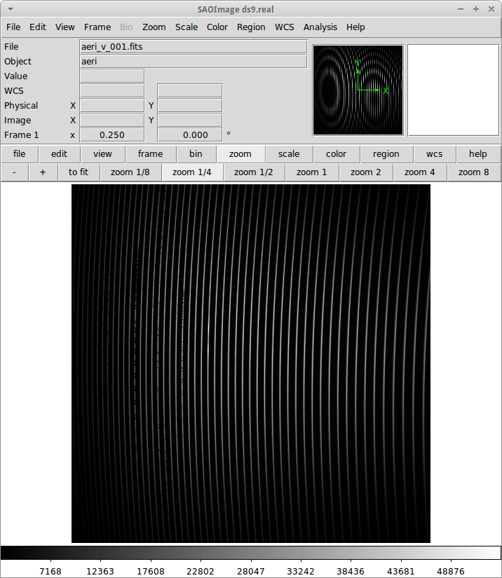
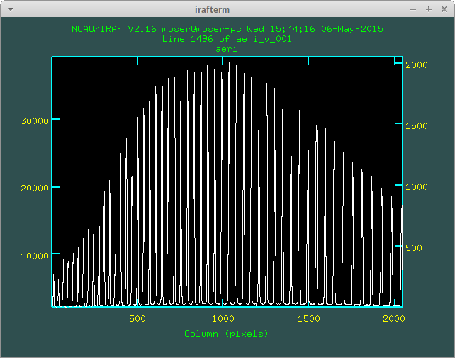
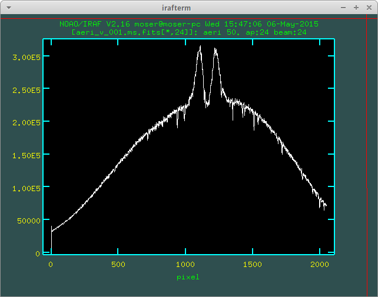

Observations and Data Reduction
BeACoN Link
Observational
Filtro de densidade
Filtro de densidade é um filtro "espectralmente cinza", reduzindo em 10 − n o fluxo luminoso, onde n é o valor do filtro. Exemplo: filtro de densidade "0.6" reduz em 75% o fluxo. Em magnitudes, isto dá +1.5 mag = − 2.5log10(10 − 0.6) = − 2.5×0.6. Assim, um filtro de densidade "1" reduz 2.5 mag.
(F)/(F0) = 10 − d ou d = − log10⎛⎝(I)/(I0)⎞⎠
Estes podem ser também chamados de ND filters.
ND |
area |
optical density |
transmittance |
|---|---|---|---|
ND2 |
1/2 |
0.3 |
50% |
ND4 |
1/4 |
0.6 |
25% |
ND8 |
1/8 |
0.9 |
12.5% |
1.0 |
10% |
Em condições ótimas, o CCD satura com integração mínima (0.15 s) numa estrela de mag 4.0 na banda V.
Exercício: qual o filtro de densidade necessário para Achernar (magV = 0.5) para que o CCD não sature? Resp.: é preciso aumentar a mag. em 3.5. Para isso, usamos um filtro de densidade de d = 1.4 ou maior (3.5 = 2.5×1.4).
Cálculo de tempos
Tempo de integração:
Exemplos: t = t0 ⁄ Pre-gain para uma estrela de mag 4.0 e para Achernar com filtro ND1.4.
Tempo de execução por filtro:
Relações vácuo/ar e ar/vácuo
The IAU standard for conversion from air to vacuum wavelengths is given by Morton (1991; ApJS, 77, 119).
From VAC to AIR (Å):
AIR = VAC/(1.0 + 2.735182e-4 + 131.4182/VAC^2 + 2.76249e8/VAC^4
From AIR to VAC (Å, reciprocal fitting done):
VAC = AIR/(1.0 - 2.73443e-4 - 131.275255/AIR^2 - 2.75708212e8/AIR^4
(Note que o inverso das operações não é somente a inversão de sinal nos fatores).
Exemplo: VAC = 3000.0 Å, AIR = 2999.12566 Å.
Sinal/Ruído (S/R)
onde C é o ganho (e − /s), S é a emissão de céu, D a de dark, ni o número de imagens somadas, e σ o erro de leitura do CCD.
Interferometria
Visibilidade (complexa) de um disco uniforme é V(u) = (J1(πau))/(πau), onde u = ‖→u‖ = (‖→Bproj‖)/(λ) e a é o diâmetro do disco.
1 mas = 4.8481368e-9 rad e 1 rad = 206264.8 arcsec (").
Cálculo de deslocamento espacial e angular
Para o modelo de referência de Faes+2013, (→Bproj)/(d) = 1 m/pc e Δθ = 8.5∘. Logo, deduz-se que ΔS ≃ 14.3R⊙.
OPD
Geral
Modo EM do CCD iXon inverte o campo do CCD (espelho).
Valores CCD iXon:
gain 1x, sensitivity: 3.8, noise (ADU): (8.2/3.8=) 2.16
gain 5x, sensitivity: 0.7, noise (ADU): (5.7/0.7=) 8.14
Valores CCD iKon: - gain 4x, sensititvity = 0.9 e readnoise = 6.66.
Valores CCD 105 (ECASS):
sensititvity 2.5x, noise (ADU): 2.5
Zeiss
Campo buscadora do Zeiss ∼ 2.5 arcmin (minutos!).
Data Reduction
Installing IRAF in Ubuntu
I was used to Ureka (http://ssb.stsci.edu/ureka/) from Gemini and STSci, but it was discontinued in 2018. Then, Gemini suggests going to AstroConda (https://astroconda.readthedocs.io).
To install it in a Ubuntu x64 16.04 LTS, I did the following steps (May 2019):
# If on Debian execute this first (not required on Ubuntu):
# sudo dpkg --add-architecture i386
sudo apt-get update
sudo apt-get install libc6:i386 libz1:i386 libncurses5:i386 libbz2-1.0:i386 libuuid1:i386 libxcb1:i386 libxmu6:i386
# Go to https://docs.conda.io/en/latest/miniconda.html and get the latest
# miniconda **64-bit** (x64) installer. Currently, for Linux, the link is:
$ wget https://repo.anaconda.com/miniconda/Miniconda2-latest-Linux-x86_64.sh
$ sh Miniconda2-latest-Linux-x86_64.sh
# Perform the installation
$ conda config --add channels http://ssb.stsci.edu/astroconda
# Writes changes to ~/.condarc
$ conda create -n iraf27 python=2.7 iraf-all pyraf-all stsci
# It will that a while to download everything.......However, I'm still getting an annoying error... How I miss Ureka!! https://github.com/conda/conda/issues/4859
Geral IRAF
Saber a data e duração da exposição (iKon/iXon; a confirmar no 301/305):
beacon> hselect *.fits DATE-OBS,EXPOSURE,$I yes
Lembrete: DATE refere-se a data de última modificação.
Eu criei uma variável no header dos arquivos FITS para corrigir a calibração em comprimento de onda: 'WLSHIFT', qual que o vetor λf = λ0 + WLSHIFT.
Para salvar uma janela do IRAF = :. snap eps.
Uso do splot ou identify:
Usar a+a no lugar de w+e+e.
Usar w+f para inverter imagem.
Instalação pacote Beacon
# sudo chmod -R 777 /data/Softwares/Ureka/iraf/extern
ln -s /data/Dropbox/Scripts/beacon /data/Softwares/Ureka/iraf/extern/beacon
subl /data/Softwares/Ureka/iraf/unix/hlib/extern.pkgreset beacon = iraf$extern/beacon/
task beacon.pkg = beacon$beacon.clCompilar fortran dentro do ambiente CL:
# copy and paste is impossible???
cd iraf$
cd extern/beacon/pccd/
del pccd2000gen05.mac.e
del ccdrap_e.e
# fc pccd2000gen05.mac.f -o pccd2000gen05.mac.e
!fort77 pccd2000gen05.mac.f -o pccd2000gen05.mac.e
# fc ccdrap_e.f -o ccdrap_e.e
!fort77 ccdrap_e.f -o ccdrap_e.e
# Opcional (na atual versao)
# unlearn datapars
# unlearn findpars
# unlearn centerpars
# unlearn fitskypars
# unlearn photpars
# unlearn daopars
# unlearn setimparsTips
Keyboard input problem at epar
Ubuntu 14.04.3, 64-bits, LANG=pt_BR.UTF-8
# to type quotation mark (quote)
alt gr + 'Big images (i.e., px > 512) not entirely displayed in DS9
Solution 1: - display.fill = yes
Solution 2: - In the login.cl file, change stdimage to imt2048 (or the desired number of pixels)
Fatiamento (slicing)
O IRAF tem uma imagem embutida nele que se chama dev$pix. Você pode testar os comandos abaixo com dela.
display image[10:20,*]
# Exibe as colunas de 10 a 20, e todas as "linhas" da imagem
imstat cube[*, *, 3]
#Roda o comando somente na 3a imagem do cubo FITSRedução ECASS
Nome lâmpada
Há vários padrões possíveis, como pref*lamp*filter (recomendado) ou pref*filter*lamp. Exemplo: aeri_lamp_r_0001.fits.
Dica identify
Para inverter λ, digite 'w+f'.
Problema rvcor
Warning: Image header parameter not found (UT)
Digite em 'y:':
0:0:0
Erro T_CONVOLVE
Error smoothing image: avg_flat_r Warning: T_CONVOLVE: Image dimension > 2. norm_flat_r is not an image or a number beacon> imhead avg_* avg_bias.fits[645,2048,1][real]: zero avg_flat_r.fits[645,2048,1][real]: flat
Solução: aplicar o read3Dfits nas imagens!!!
beacon> read3Dfits bias_*.fits
beacon> del bias_*.fits
beacon> !renlist.py
'cp_'
''
beacon> !renlist.py
'_0001.'
'.'
Redução IAGPOL
Pacote disponível no github.
Padronização
Nome dos arquivos = (obj)_(suf)_(filter)_0*, onde obj é o nome tabelado (planilha xls), suf é um sufixo da configuração do CCD (e.g., _g5, _full).
Cada sequência de um dado alvo é salvo numa pasta.
A pasta calib é reservada para os arquivos de calibração.
Não há procedimento específico para diferenciar padrões observadas nas 2 calcitas. Em geral, modifica-se o nome da pasta (e a rotina de redução identifica a calcita pelo ângulo das estrelas).
Nome dos resultados da redução = w(obj)_(filter)_(pos)00*.(version).out e JD_(obj)_(filter).
Redução MUSICOS
The new (Jan. 2015) are: calib_mus and reduce_mus. With MUSICOS both flats are important: CCD and dome. MUSICOS use Ikon CCD: gain is 0.9 and readnoise(e − ) is 6.66 (1MHz, gain x4).
calib_mus: combine bias; combine CCD flats; apply bias+CCDflat to dome flats*; combine dome flats*; mark apertures on the flat; apply bias+flat to lamps; identify lamps within marked lamps. PS: * are optional steps.
reduce_mus: apply bias+flat to obj. images; extract and combine obj. images; apply lamp; normalize spectra (continuum); create cont. spec.: spec/norm-spec; combine apertures with sum to combined obj. and normalized spec.; final product is summed combined obj./summed normalized spec.
  Atenção no fit das ordens: use 'k' (razão; ou 'j', resíduo) para ter uma ideia de como ficará o resultado. Recomendação é marcar regiões foram da linha com 's+s'. Porém, na janela seguinte, as regiões precisam ser removida ('t+f').
'h' volta para o gráfico inicial.
A linha Hα está na ordem 24 do vermelho.
Lâmpadas devem estar no formato lamp*filter*. Exemplo: lamp_v_0001.fits.
Normalização linhas de emissão
Para imendar as ordens, usa-se a rotina continuum. Porém, ela parece não funcionar muito bem na presença de linhas de emissão...
Exemplo: na estrela spec_14nov18/bcmi, o Hα esperado era minímo ~ 0.85 e máximo ~ 1.7. Entretando, obteve-se minímo ~ 0.55 e máximo ~ 1.1 disforme.
Criei então a opção doextr. Se yes (padrão), faz a estração das ordens (*.ms*). Se no, só re-faz a normalização, para correção deste erro.
Redução MUSICOS com OPERA
Instalação
Usar cfitsio antigo no caso de problemas...
2+1 arquivos são necessários: opera.zip e fftw.zip, +cfitsio.zip. Após descompactá-los:
cd opera-1.0
./configure --prefix=/path/to/opera-1.0
# se não funcionar,
#more DEPENDENCIES (gcc, cfitsio, fftw3, zlib, Autotools, gnuplot)
#autoconf/bootstrap.sh
#sudo apt-get install automake autoconf libtool
#DEP > cfitsio (3.2.9)
#DEP > fftw3
#sudo apt-get install fitsverify
cd ../fftw-x
./configure
make
sudo make install
cd ../opera-1.0
make
make install
#. ./setup.sh
#To uninstall:
#make distcleanUso
As rotinas precisam que o header esteja corretamente configurado. Entre as exigências, estão:
EXPTIME (ou outra KEYWORD) esteja em notação americana, isto é, float divido por "." (e não ",").
"R" ou "B" em FILTER.
Objeto (FLAT, BIAS, etc) corretamente identificados.
Para tudo isso, eu criei um script python prepare_header_opera.py. É só rodar na pasta da noite.
Além disso, todos os arquivos devem estar na raiz da noite.
Abaixo, o PATH do script é $HOME/opera-1.0/pipeline/pyMusicos/
cd /data/MUSICOS/14set05_R
operaQueryImageInfo -r ./ -e "INSTMODE OBSTYPE OBJECT EXPTIME2 DATE MODDATA"
operaMusicos.py --datarootdir=/data/MUSICOS/ --pipelinehomedir=$HOME/opera-1.0 --productrootdir=$HOME/Reductions/MUSICOS/ --night=14set05_R --product="CALIB" -pvts
# "-s" means SIMULATION of the reduction...
operaMusicos.py --datarootdir=/data/MUSICOS/ --pipelinehomedir=$HOME/opera-1.0 --productrootdir=$HOME/Reductions/MUSICOS/ --night=14set05_R --product="OPSPC" -pvtExemplo:
cd /data/spec_15set25/
python prepare_header_opera.py
/data/Softwares/opera-1.0/bin/operaQueryImageInfo -r ./ -e "INSTMODE OBSTYPE OBJECT EXPTIME2 DATE MODDATA"
geany /data/Softwares/opera-1.0/pipeline/pyMusicos/operaMusicos.py
# edit 1st line!
operaMusicos.py --datarootdir=/data/ --pipelinehomedir=/data/opera-1.0 --productrootdir=/data/Reductions/ --night=spec_15set25 --product="CALIB" -pvts
operaMusicos.py --datarootdir=/data/ --pipelinehomedir=/data/opera-1.0 --productrootdir=/data/Reductions/ --night=spec_15set25 --product="CALIB" -pvt
# my laptop, 2 cores = only 1 used; 1200 MB memory used
# my laptop, 1 bias, 1 flat, 1+1 ThAr = X min
operaMusicos.py --datarootdir=/data/ --pipelinehomedir=/data/opera-1.0 --productrootdir=/data/Reductions/ --night=spec_15set25 --product="OPSPC" -pvt
# my laptop, 6 files, 1 tgt = X minResultados
$HOME/opera-1.0/pipeline/pySpectralAnalysis/plotSpectrum.py —spectrumfile=HR8634_R_001.spc.gz
gunzip -c HR8634_R_002.spc.gz > HR8634_R_002.spc
gnuplot -persist ../14set05Plots/HR8634_RED.gnu
gnuplot -persist ../14set05Plots/HR8634_RED_norm.gnuProblemas
Não encontra object. Solução: verificar header.
Stavros - Redução beacon
Critérios:
Pastas: PATH/calib e PATH/prefix
Nomes: bias_0#.fits; flat_F_0#.fits; onde F é um dos filtros [u,b,v,r,i]
Rodar ecl> calib
Na pasta do prefix, Rodar ecl> reduce e suffix =
Dicas:
ccdrap, e reject = 70000
polrap, pout = 02 01 08, significa 2 pontos excluídos: o primeiro (01) e o último (08).
CTRL+U+L > vai para o final da linha no epar !
polrap, n = 4, agrupamentos de 4 posições.
amdlib
...
Notas sobre correções em comprimento de onda
As diferenças em λ (em relação ao repouso) se dão por 4(+1) motivos:
Problema na calibração do comprimeto de onda.
Calibração de onda "no vácuo" vs "no ar" (padrão usual)
Ajuste de velocidade heliocêntrica
Velocidade radial da estrela
(Diferenças para com o HDUST)
Problema na calibração do comprimeto de onda
No padrão de espectro FITS, os espectros são salvos numa única tabela de fluxo. Para isso, o espectro é linearizado (λ(px) = f(px) = a×px + b), e a info da função do comprimento de onda é salva no header da imagem sob os parâmetros b = CRVAL1 e a = CDELT1.
Assim, quando temos problemas de calibração, eles podem ser em a, em b, ou em ambas.
Veja que isso não é mandatório: o ESO, por exemplo, salva uma tabela para o fluxo e outra para o comprimento de onda. Pode-se inclusive ter uma tabela para a incerteza no fluxo.
Calibração de onda "no vácuo" vs "no ar"
O padrão nas observações é comprimento de onda no ar. O HDUST é padronizado para o vácuo. Para passar de um para o outro no PyHudst, use as funções presentes no spectools (vac2air e air2vac).
Ajuste de velocidade heliocêntrica
A velocidade da Terra girando e se movendo ao redor do Sol faz com que não vejamos os astros sempre com a mesma velocidade de nós. Obviamente, esta correção depende de quando realizamos a observação (ou da Terra com respeito ao Sol).
Apesar de envolver a Terra, essa correção é chamada de correção "heliocêntrica", pois calcula a velocidade para um observador que estivessse no Sol. A rotina que calcula isso no IRAF é a rvcorrect. Veja o que diz o seu manual (http://stsdas.stsci.edu/cgi-bin/gethelp.cgi?rvcorrect):
The observed radial velocity is corrected for the motion of the observer in the direction of the observation. The components of the observer's motion corrected are those due to the Earth's rotation (diurnal velocity), the motion of the Earth's center about the Earth-Moon barycenter (lunar velocity), the motion of the Earth-Moon barycenter about the center of the Sun (annual velocity), and the motion of the Sun (solar velocity) relative to some specified standard of rest.
Ao ser executado, o rvcorrect salvará no header do arquivo um campo com a flag VHELIO. Este valor é aplicado usando a rotina dopcor ("Doppler correction"), que alterará os valores de CRVAL1 e CDELT1 de acordo com VHELIO.
É possível mostrar que as correções são feitas de acordo com as equações abaixo:
Velocidade radial da estrela
Mesmo que tudo seja perfeitamente calibrado, o centro da linha da sua estrela estará deslocado do λ0. Isto porque ela deve ter um movimento relativo em relação ao Sol, chamado de "velocidade radial".
Note que a velocidade radial de uma estrela deve variar se ele tiver outro corpo em seu campo gravitacional, como num sistema binário ou se tiver planetas.
Diferenças para com o HDUST
Por melhor que sejam os modelos do átomo de Hidrogênio, efeitos quânticos complicados (como "acoplamento spin-órbita") nos impede de precisamente determinar o comprimento de onda das transições eletrônicas (como na fórmula de Rydberg).
Assim, o valor do λ0 no arquivo simulation do HDUST só pode ser determinado "empiricamente" - ou se você recuperar a fórmula e todos os valores das constantes utilizados no programa.
Interferometry
OIDATA_APP: all observational info (big files, no plot gen.)
OIDATA_APP_AVG: average of observ. info (small files, plot)
OIDATA_APP_AVG_SPEC_PRO: wavelength corrected (SPEC) + V2+DP corrected from calibrators (nights without calibrators not have these files)
Logs
Noites spec
14ago11
Observada por D. Bednarski e André Luiz. Sem calibração e lâmpadas !!!
Copiei bias e flat da noite de spec_14jul15 e, deslocando e redimensionando cada uma das aberturas aparentemente funcionou:
a (All flag - keep on) s+'yes' (aperture 1) g (recenter) z (resize)
Alvos spec
Achernar
Noites com dados na fase ativa de 2013+: - 130925, ECASS, - 130926, ECASS, - 131111, MUSICOS, - 131112, MUSICOS, - 131209, MUSICOS, - 140715, MUSICOS, - 140811, MUSICOS, - 141013, MUSICOS, - 141118, MUSICOS, - 150924, MUSICOS, - 151028, MUSICOS,
Alpha Col
Pedido Xuxu, entregue em 14/03/15. Noites com dados: - 111020, ECASS, R, 6 specs, 1 summed. - 120405, ECASS, R, 10 specs, 1 summed. - 120910, ECASS, B, 11 specs, 1 summed. - 121120, ECASS, R, 20 specs, 1 summed. - 130926, ECASS, R, 30 specs, 2 summed. - 131111, MUSICOS, B, 10 specs, error orders 75/76. - 131112, MUSICOS, R, 5 specs, 1 summed. - 131209, MUSICOS, R, 8 specs, 1 summed. - 140225, MUSICOS, R, 5 specs, 1 summed. - 141013, MUSICOS, R, 3 specs, error order 42. - 141118, MUSICOS, R, 3 specs, error order 26. - 150402, MUSICOS, R, 5 specs, error cpp.